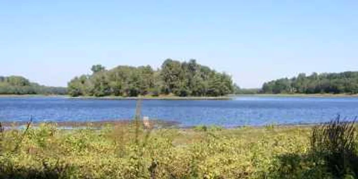
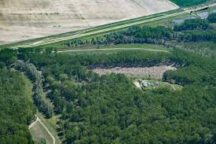

Diversitatea biologică înseamnă variabilitatea organismelor vii din toate sursele, inclusiv, printre altele, a ecosistemelor terestre, marine şi a altor ecosisteme acvatice şi a complexelor ecologice din care acestea fac parte; aceasta include diversitatea în cadrul speciilor, dintre specii si a ecosistemelor.